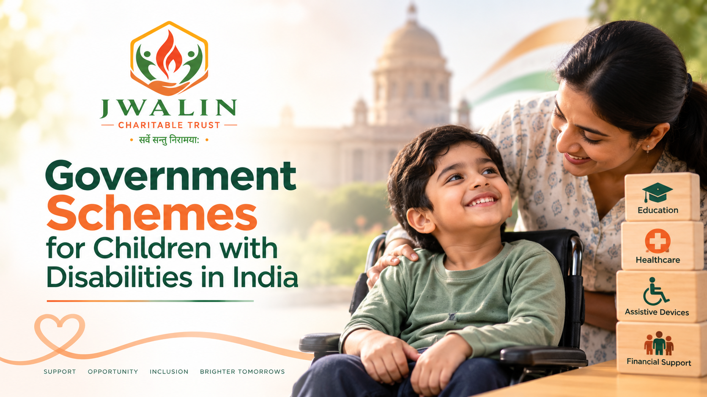

Government Schemes for Children with Disabilities in India
Raising a child with cerebral palsy (CP) or another developmental disability often means managing paperwork alongside therapy. Knowing which government schemes for children with disabilities in India exist can ease some of the financial and practical load. Rules and eligibility change, so treat this as a starting point and confirm details with official sources.

Raising a child with cerebral palsy (CP) or another developmental disability often means managing paperwork alongside therapy. Knowing which government schemes for children with disabilities in India exist can ease some of the financial and practical load. Rules and eligibility change, so treat this as a starting point and confirm details with official sources.
Start with a Disability Certificate and UDID
The Unique Disability ID (UDID) card is a single government-issued identity that records disability details and helps people access schemes without repeatedly submitting certificates. Families can apply online at swavlambancard.gov.in or through a Common Service Centre, after which a designated hospital carries out the assessment. For children, parents or guardians can apply on their behalf. For children under 18, the card must be updated every five years. Udid Card - Apply, Eligibility, Documents Required, Step-by-Step Process 2026 +3
Many schemes require a benchmark disability of 40% or more, along with a valid certificate or UDID. IAC
Key Schemes for Children with Cerebral Palsy
- The National Trust, a statutory body under the Ministry of Social Justice and Empowerment, serves people with autism, cerebral palsy, intellectual disability and multiple disabilities, with schemes for early intervention, day care, residential care and health insurance. Ask about: Nationaltrust
- Disha: early intervention and school readiness
- Vikaas: day care of at least six hours a day, which also gives family members time for other responsibilities Thenationaltrust
- Niramaya: affordable health insurance with cover of up to ₹1 lakh Nationaltrust
- Samarth and Gharaunda: respite care and group homes Thenationaltrust
Other Support Worth Asking About
- Assistive devices such as wheelchairs, through the ADIP scheme
- Scholarships, fee concessions and reserved seats in education
- Travel concessions for children with disabilities
- Disability pensions and state-level schemes, which vary by state
- Tax benefits for parents
How to Apply Step by Step
- Obtain the disability certificate and UDID first.
- Collect identity, address and income documents.
- Approach your district social justice or welfare office, or an organisation registered with the scheme. Niramaya enrolment, for example, goes through registered organisations. Iacp
- Keep copies of every application.
- UDID applications are free of cost, so avoid agents who charge fees. UDID CARD
Why This Matters
Therapy, assistive devices and education work best when families can afford to keep them going. Financial support does not replace medical care, so continue to consult your paediatrician and therapists about your child's needs.
From Our Journey to Every Family's Hope
Information should never be a barrier to a child's growth. Jwalin Charitable Trust supports families of children with cerebral palsy and developmental disabilities through awareness, therapy support, caregiver guidance and education across India.
To learn more, volunteer or support a child, visit cpchildindia.org.
This article is for general awareness and is not legal or medical advice. Please verify current eligibility with official government sources.